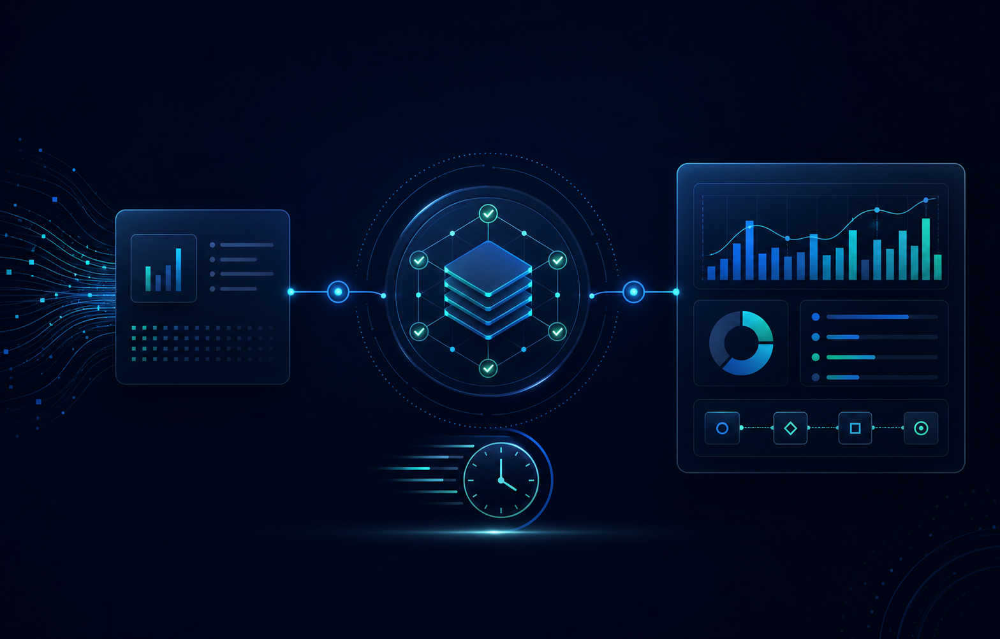
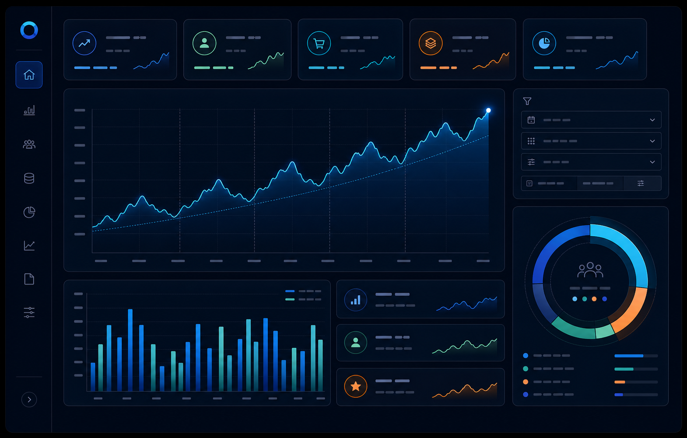

Olist e-commerce analysis
From transactions to commercial questions.
Built a clean analysis layer and Tableau dashboards to explore GMV, orders, customer growth, repeat purchase share, and category and product performance.
Analytics & business intelligence
I build practical dashboards, reporting workflows, and analysis that help teams see performance, spot opportunities, and spend less time fighting spreadsheets.
Selected work
An end-to-end portfolio project showing how raw transactional data becomes an executive view of performance and customer behaviour.
Olist e-commerce analysis
Built a clean analysis layer and Tableau dashboards to explore GMV, orders, customer growth, repeat purchase share, and category and product performance.

Confidential internal project
Mapped a manual operational reporting process and built a scheduled Google Sheets automation that ingests sales data, validates operational updates, and supports reliable route-planning panels for an event transport operation.
Designed the workflow around a structured ledger, controlled event inputs, cancellation checks, and safe rebuilds—improving the consistency and recoverability of planning information.
Impact: Reduced a recurring manual update workflow by approximately 80%, from around 9 hours to under 2 hours per month, with greater operational benefit during high-volume periods.

Confidential internal project
Built a structured Excel reporting model to turn several years of sales data into a clear view of demand, seasonality, customer behaviour, and event performance.
Prepared and transformed the data with Power Query, then created KPI views, charts, PivotTables, and interactive filters for practical exploration of the 2023–2025 reporting period.
Business value: Made it easier to compare event performance, identify busy and quiet periods, and distinguish new-customer acquisition from repeat-customer activity.
Expertise
A practical toolkit across analysis, data quality, reporting, and operational automation.
Turning raw data into clear answers, KPI views, and decision-ready reporting.
Improving the reliability of operational information before it drives a decision.
Removing repetitive spreadsheet work while keeping everyday business processes dependable.
About me
Hi, I’m Guilherme, a Business Analyst focused on turning everyday operational information into clearer answers and better decisions.
My background in customer-facing and operational roles has shown me how much time businesses lose to manual processes, scattered spreadsheets, and reporting that does not answer the real question. That is where I like to work: understanding the process, improving the data, and making the result useful to the people running the business.
I bring a practical toolkit across SQL, Tableau, Excel, Google Sheets, reporting automation, and data quality—always with the business context in mind.
How I work
I start with the decisions that matter, then define the metrics, data checks, and reporting view needed to support them.
A focused sales-data review can reveal performance trends, strong products, slower periods, and useful next questions to investigate.
Get in touch